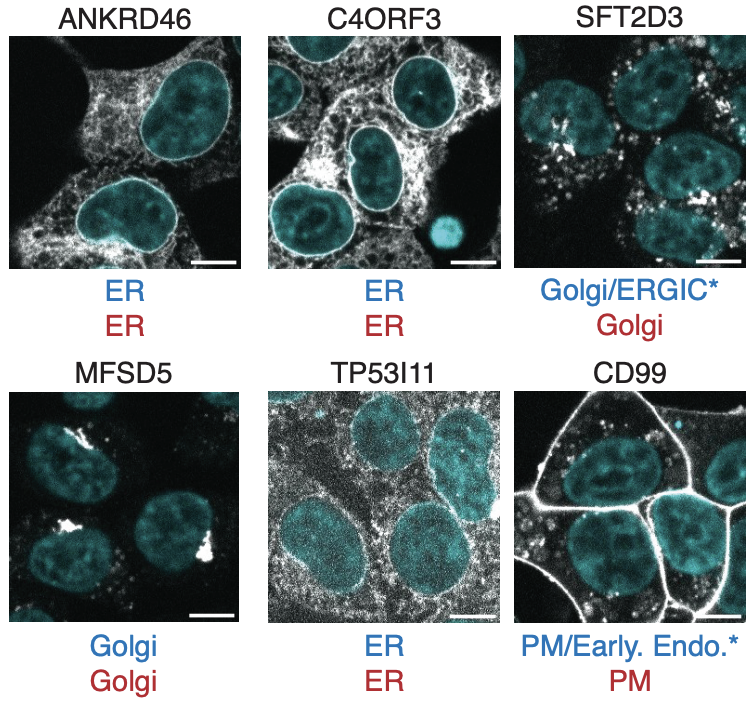

|
James Burgess I am a Stanford PhD student working on computer vision and machine learning. I'm fortunate to be advised by Serena Yeung and to be partly supported by the Quad Fellowhip. In vision and ML, I'm interested in generative modeling, diffusion models, and 3D vision. I'm also very excited by applications of ML to cell biology, especially with representation learning and computer vision for microscopy. |

|
Research |
|

|
Global organelle profiling reveals subcellular localization and remodeling at proteome scale
Hein et. al. (including James Burgess) Preprint bioRxiv A proteomics map of human subcellular architecture, led by the Chan-Zuckerberg Biohub. |

|
Viewpoint Textual Inversion: Unleashing Novel View Synthesis with Pretrained 2D Diffusion Models
James Burgess, Kuan-Chieh Wang, Serena Yeung In review project page / arXiv Image diffusion models encode 3D world knowledge in their latent space, which our method, ViewNeTI, leverages to do novel view synthesis from few input views. |

|
Learning orientation-invariant representations enables accurate and robust morphologic profiling of cells and organelles
James Burgess, Jeffrey J. Nirschl, Maria-Clara Zanellati, Sarah Cohen, Serena Yeung, Nature Communications code / biorXiv Unsupervised shape representations of cells and organelles are erroneously sensitive to image orientation, which we mitigate with equivariant convolutional network encoders in our method, O2VAE. |
|
I stole this website template from Jon Barron who published his source code here. |